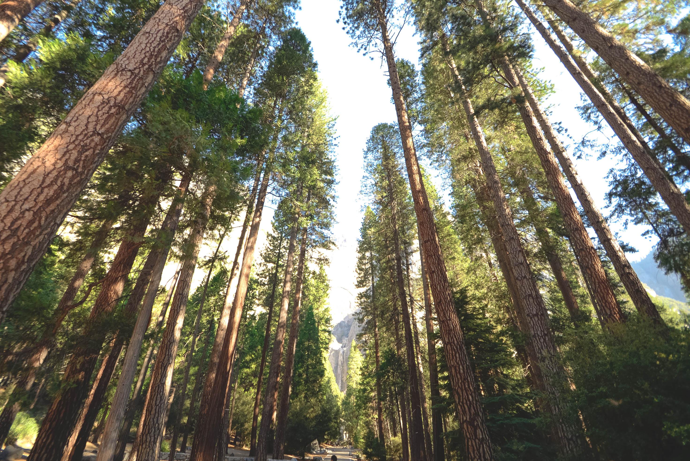
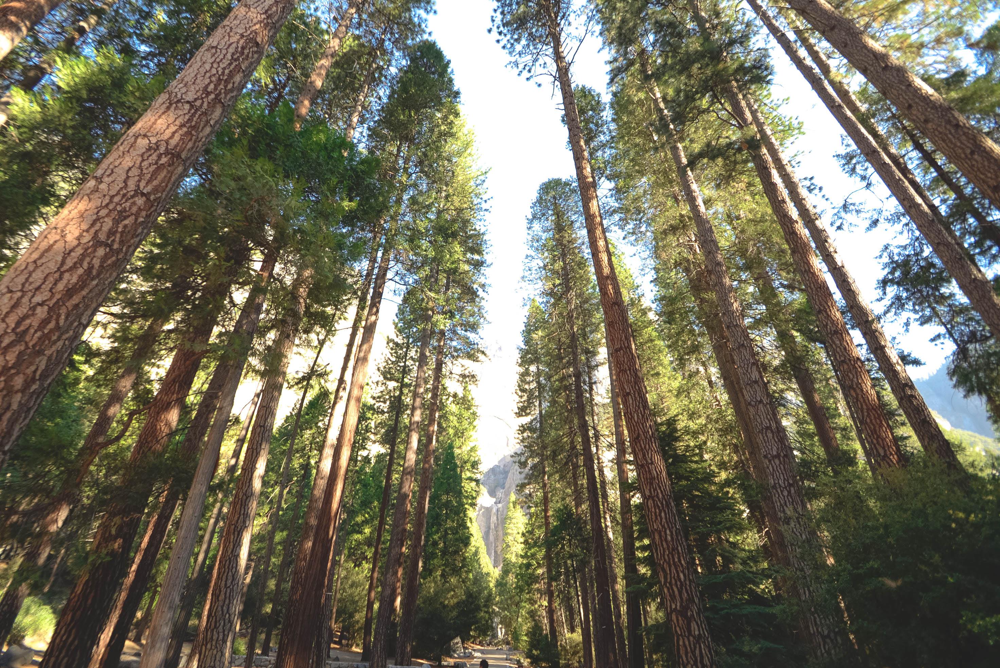

Technology's Greatest Gift
THE POWER TO CREATE
The power to create
New technology is being created every day, all of it claiming to add value to our lives by giving us something; notifications, connections, conversations, memories, and entertainment. If you can imagine it, technology is trying to provide it. All of this is fantastic, but with technology giving us so much, it seems that we are overlooking perhaps the best thing that all of this technology is giving us… the power to create.
With nothing more than a run of the mill smartphone and a computer with access to the series tubes that make up internet you can build something incredible and share it with billions instantly. It is an unprecedented ability completely unique to the current time, never before have humans has such amazing abilities to create and share with so many. As long as we don't forget that all of our shiny technology is great for creating as well as consuming, we should have more cool stuff than any generation before.
Towards the end of last year [2014] I spent a few hours each evening after work working on a little project about coffee. It costed almost nothing to produce and was finished in a little over a week. This is a behind the scenes look at the process. Hopefully it will inspire you to build something and point you to some really great free resources for doing so.
You can check out the finished project here.
The project is made of videos, images, music, and text on a web page.
Videos:
The videos for this project are top down, pseudo stop motion using a chalkboard as a backdrop and the primary method for information display. It was all filmed on an iPhone 5s rubberbanded to a 3ft level that was clamped to a ladder above my kitchen table.
The chalk board was a piece of $8 paneling from Lowes painted with a few dollars of chalkboard paint
Each of the three videos had about 40 minutes of raw footage that was edited down to 3 or 4 minutes. All of the editing was done in iMovie, a free software on any Apple computer. For windows, you could use Windows Movie Maker or Lightworks has a free version that works on Windows, Mac, and Linux.
Given that this was my first time really doing any video production, I was probably far from efficient. Each video took a little more than two hours to edit. The basic process was just cutting out all of the transitional clips to get the concise stop motion feel that I was looking for.
Photos:
Photos were taken with the same setup used for the videos, an iPhone rubberbanded to a ladder. I did use the square setting in the camera app so that they looked more uniform on the page.
Text:
The text ended up being the easiest part of the whole project. Coffee has been a hobby and borderline obsession of mine for a couple of years and I use all three of the brewing methods featured in the videos at least once a week. Some of the resources I have found most interesting in my coffee education are:
Music:
The three tracks that play as background music in the tutorial videos are from the Free Music Archive. There are loads of tracks available, the hard part is not finding music, but finding the right track for your project. Finding the right music is very much a needle in a haystack problem. It is much harder to do a keyword search on music than it is for something like a stock photo or a page theme. I must have listened to bits of a few hundred tracks to find the three I used.
Tech:
The site is built on a Bootstrap template from Blacktie.co. The templates are free to use and quite fantastic.
The project is currently hosted for free on GitHub. GitHub generously lets you host live sites absolutely free. There are a few limitations however, server side code and database support will not work on a GitHub hosted site, but for a lot of projects just the HTML, CSS, and Javascript that GitHub will display is more than enough.
Additional Resources
There are loads more resources available if you want to build your own thing. Here are a few of my favorites:
Images:
Unsplash
The folks at Unsplash offer beautiful high resolution photos absolutely free to do anything you want with. They have photos for almost any project and they are all fantastic. Any of the photos on this blog that do not look like they were taken with an iPhone almost defintly came from Unsplash. To make the service even better, they add 10 new photos every 10 days! Here are a few of my favorites

 


Music:
Free Music Archive
The Free Music Archive is directed by WFMU and contains a seemingly infinite library of high quality audio tracks.
Creative Commons
Creative Commons has a great search tool for any type of media.
Templates:
BlackTie
Totally free handsome bootstrap themes licensed under Creative Commons.
Spiffy HTML5 templates licensed under Creative Commons.
Hopefully you are now equipped with inspiration and a great set of resources to get you started. All that is left to do is build something! If you do, I would love to see it.
This is Something
Sed tristique purus vitae volutpat ultrices. Aliquam eu elit eget arcu commodo suscipit dolor nec nibh. Proin a ullamcorper elit, et sagittis turpis. Integer ut fermentum.
Also Something
Sed tristique purus vitae volutpat ultrices. Aliquam eu elit eget arcu commodo suscipit dolor nec nibh. Proin a ullamcorper elit, et sagittis turpis. Integer ut fermentum.
Probably Something
Sed tristique purus vitae volutpat ultrices. Aliquam eu elit eget arcu commodo suscipit dolor nec nibh. Proin a ullamcorper elit, et sagittis turpis. Integer ut fermentum.